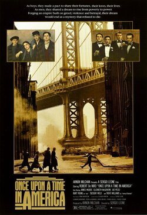

Director:Sergio Leone
Writers: Harry Grey(based on novel "The Hoods" by), Leonardo Benvenuti(screenplay by), Piero De Bernardi(screenplay by)
Genres:Crime, Drama
Storyline:
With the vivid memory of his long-gone childhood friends Max, Patsy, and Cockeye etched in his mind, his ferociously loyal partners-in-crime during their rise to prominence in New York's Prohibition-era Lower East Side, the defeated, penniless, and guilt-ridden former gangster David "Noodles" Aaronson returns to Manhattan. Not knowing what to expect on his mission to shed light on his opaque past, grizzled Noodles reunites with his only living friend Fat Moe after 35 haunted years of self-exile. However, the relentless, piercing sound of culpability stands in the way of finding closure, as the inscrutable content of a well-worn leather suitcase further complicates matters. And now, against the backdrop of a torn conscience, the sad, bittersweet recollections of more than 50 years of love, death, and everything in-between become inextricably intertwined, leading to even more puzzling questions. But what are a man's options when he is left with nothing?
More Back